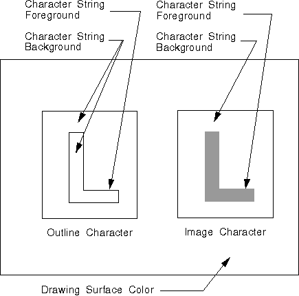

The following primitives have a background:
The background of any character or marker primitive, whether the primitive is from an image or an outline font, is the entire character or marker box. First the background is drawn, then the foreground is drawn on top of it. Similarly, the background of an area primitive is the entire area to be filled. The background of an image primitive, however, is that part of the primitive in which the pels are not set. The following figure shows the background of a primitive.

Background of a Primitive
The background of this character-string primitive is the entire character box.
The index to the default background color is CLR_BACKGROUND, which provides a background color appropriate for the device. On a printer, CLR_BACKGROUND is the color of the paper. On a display screen, CLR_BACKGROUND is the default window background color.